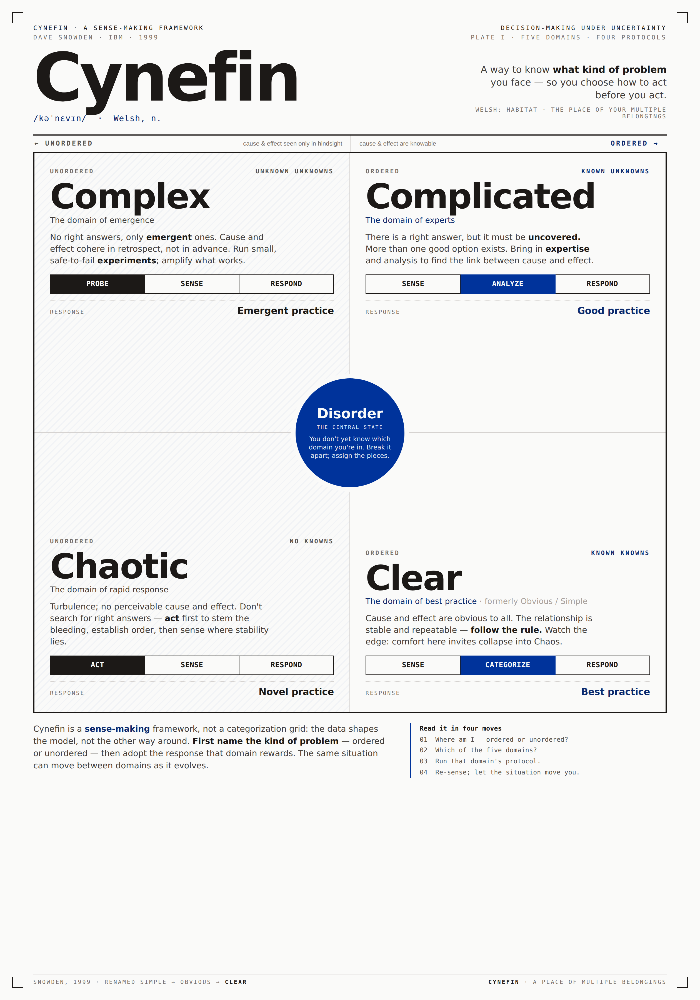
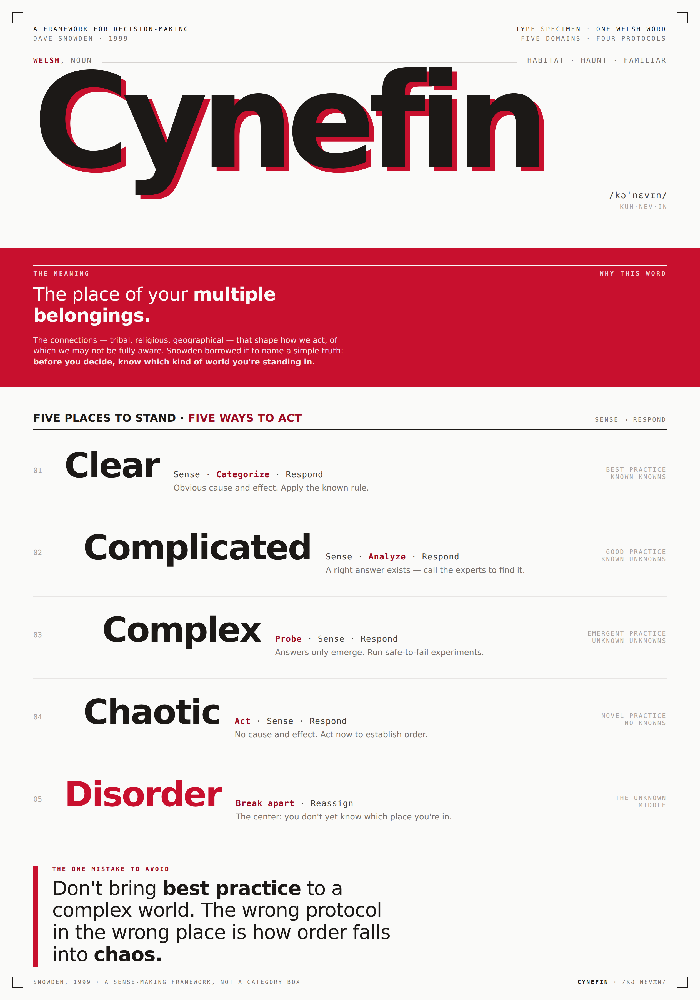

Swiss Poster · Options Sheet
Cynefin · four directions
One subject, four Swiss lineages. Same facts — five domains, four protocols, one fold — read through four different dominant forms.
Weltformat F4 · 1260 × 1800 each

01
The Map
Geigy scientific plate — the faithful 2×2 domain matrix as a measured specimen

02
The Welsh Word
New Wave typographic specimen — “Cynefin” as overprinted mega-type, etymology as concept

03
The Fold
Basel figure-ground — ordered vs. unordered, and the cliff from Clear into Chaos

04
Four Protocols
Müller-Brockmann rhythm — the four sense-making sequences as a decision score
Cynefin · Dave Snowden · 1999
Pick a direction · swiss-poster